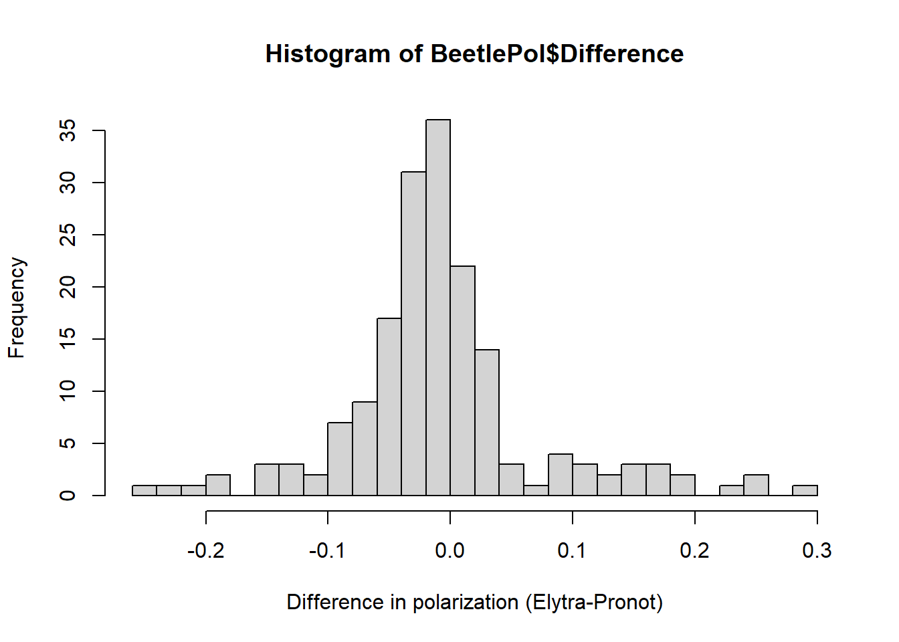

Calculating degree of polarisation
In this file, we calculate the reflectance of the beetles from the RGB values measured from calibrated photographs to find the degree of circular polarization.
Specifically, we first linearise the RBGs using the parameters derived from the MATLAB code adapted from Stevens et al 2007 (Biological Journal of the Linnean society, 90(2), 211-237).
Next we equalise the RGB values with the grey standard with known reflectance.
Then we calculate the difference between the two polarizations standardized by their sum.
Finally we correlate the polarization with reflectivity obtained in previous scripts
Setting up
General
Libraries sourced from an additional script
source("./MacroEcol_1_Libraries.R")We included an overall option to keep as many decimals as possible in our data, which is important for our calculations
options(scipen = 100)We imported the data set containing ecological and phylogeny data obtained in previous steps.
Cons1 <- read.csv("../Data/FromCode/ConsReflEcolInd.csv")[-1]Parameters
To calibrate, we photographed a set of 2%, 20%, 40%, 60%, 80% and 99% and standards. Then, we fitted a polynomial regression between the RGB values the standards display in our set up and their expected reflectance on each channel (obtained from the manufacturer), using a custom made function in MatLab.
Since the pictures were not taken on the same day, we calibrated the beetle photographs to the photographs of the standards taken on the same day. That means we had one set of parameters for each camera configuration (in the code this is called camera_cat)
The parameters obtained from these curves were stored in .txt files, so we wrote a function to import them directly.
read_parameters_from_file <- function(camera_cat, type) {
param <- read.table(paste0(
"../Data/ParametersMatLab/StandardParams",
camera_cat, type, ".txt"
), header = TRUE) %>%
dplyr::select(1:5, 7) %>%
dplyr::mutate(camera_cat = rep(camera_cat)) %>%
dplyr::mutate(type = rep(type))
return(param)
}
parameter0 <-
bind_rows(
read_parameters_from_file("J21", "LCP"),
read_parameters_from_file("J21", "RCP"),
read_parameters_from_file("J21", "VIS"),
read_parameters_from_file("J25", "LCP"),
read_parameters_from_file("J25", "RCP"),
read_parameters_from_file("J25", "VIS"),
read_parameters_from_file("J26", "LCP"),
read_parameters_from_file("J26", "RCP"),
read_parameters_from_file("J26", "VIS"),
read_parameters_from_file("F01", "LCP"),
read_parameters_from_file("F01", "RCP"),
read_parameters_from_file("F01", "VIS"),
read_parameters_from_file("F04", "LCP"),
read_parameters_from_file("F04", "RCP"),
read_parameters_from_file("F04", "VIS")
)The regression uses 4 parameters a, b, c, and d. We obtained one value for each parameter, on each channel (R,G, B) for each type of filter (VIS = Visible, LCP =left handed circularly polarized and RCP= right circularly polarized) on each camera configuration (camera_cat)
parameter <-
parameter0 %>% dplyr::filter(Channel != "Gy") %>% # keep only the channels R, G, B.
dplyr::select(-5) %>% # this column is the % of fitting (ideally) above 0.99)
gather(
key = parameter,
value = value,
-Channel, -type, -camera_cat
) # re-arrange: All parameters in 1 column
head(parameter)## Channel camera_cat type parameter value
## 1 R J21 LCP a 2384.835490000000
## 2 G J21 LCP a 0.000543537042
## 3 B J21 LCP a 0.027512358400
## 4 R J21 RCP a 0.010489709500
## 5 G J21 RCP a 0.000006682114
## 6 B J21 RCP a 0.000202935085Grey Standard
This is the known reflectance (from manufacturer) of the 40% grey placed next to each beetle in the photographs
grey_standard_refl <- read.csv("../Data/12_knownGreyStdReflectance.csv")Raw RGB values
These are the RGB valuyes extracted from the calibrated photographs. We considered one region of interest (ROI) in one elytron and one in the pronotum. We also sampled the 40% grey as a reference.
Elytra
We separated the RGB values of the elytra and the grey standard but kept a unique identifier called PhotoID. This helps pairing the sample with the grey that was in that picture further in the analysis (required to run the linearisation function).
RGBElytraNGrey <-
RGB_raw_transform %>%
dplyr::filter(tr != "Pronotum") %>% # remove data for the pronotum
unite("PhotoID", # Create a unique code
c(1, 2, 4), # which contains the individual_Filter_Channel
remove = FALSE
) # still keep all the original columns
# Each beetle sample has a grey standard in the same photo.
levels(as.factor(RGBElytraNGrey$tr))## [1] "Elytra" "Grey"# We will separate the elytra and grey
# but they will still share the unique PhotoID to pair them later
RGBElytra <-
RGBElytraNGrey %>%
dplyr::filter(tr == "Elytra")
RGBElGrey <-
RGBElytraNGrey %>%
dplyr::filter(tr == "Grey")Pronotum
Pronotum data was not available for the following beetles:
RGBPronot1 <-
RGB_raw_transform %>%
dplyr::filter(tr != "Elytra") %>% # remove data for the elytra
unite("PhotoID", # Create a unique code
c(1, 2, 4), # which contains the individual_Filter_Channel
remove = FALSE
) # still keep all the original columns
inPGind <- levels(as.factor(RGBPronot1[RGBPronot1$tr == "Grey", ]$ind))
inPRind <- levels(as.factor(RGBPronot1[RGBPronot1$tr == "Pronotum", ]$ind))
setdiff(inPGind, inPRind)## [1] "ecry03" "mcla02" "roci02"setdiff(inPRind, inPGind)## character(0)# Note pronotum missing for these: "ecry03" "mcla02" "roci02"They are considered for the overall polarization analysis but not in the correlations elytra-pronotum.
We separated the RGB values of the pronotum and the grey standard but kept a unique identifier called PhotoID. This helps pairing the sample with the grey that was in that picture further in the analysis (required to run the linearisation function).
RGBPronot1 <-
RGBPronot1 %>%
dplyr::filter(ind != "ecry03" &
ind != "mcla02" &
ind != "roci02") # Remove these species because pronotum unavailable
RGBPronot <-
RGBPronot1 %>%
dplyr::filter(tr == "Pronotum")
RGBPrGrey <-
RGBPronot1 %>%
dplyr::filter(tr == "Grey")Calibrations
Here we linearise and equalise RGBs for each camera setting and each channel separately.
First we defined the functions as follows:
Linearization
\[\ Y = a*exp(b*x) + c*exp(d*x)\] Where a, b c and d are the parameters obtained from MatLab. x is the raw RGB value for the ROI and Y is the linearised value
# The arguments of this functions are:
# a DataFrame: containing the RGB values that we want to linearise
# a ParameterData: a data frame containing the parameters a,b,c,d from MatLab
lin_equ_RGB <- function(DataFrame, ParameterData) {
Result <- DataFrame # keep the original data, results will be added to it
Result$Linearized <- rep("NA", length(DataFrame[1])) # add an empty column
for (i in 1:length(DataFrame$PhotoID)) {
para <- ParameterData %>% # the data frame with the parameters
# For each line in the DataFrame to linearise, we need to find
# the correspondent set of parameters:
dplyr::filter(type == DataFrame$type[i] & # VIS, LCP, or RCP
Channel == DataFrame$Channel[i] & # R, G or B
camera_cat == DataFrame$camera_cat[i]) %>% # Camera conditions
dplyr::arrange(., parameter) # arranged alphabetically
# Apply the formula
Result$Linearized[i] <-
para$value[1] * exp(para$value[2] * Result$value[i]) +
para$value[3] * exp(para$value[4] * Result$value[i])
}
return(Result)
} Equalisation
\[\ E = l / (rg /(kg*255))\] Where rg is the raw RGB values for the grey in the photo, kg is the known reflectance of the gray standard (from the fabricator), l is the linearised value of the ROI and E is the equalised value of the ROI.
For this part we did not use and equation, rather we obtained the calculations directly form the data frames.
Elytra
Linearise
We applied the function defined in the previous step
LinearizedElytra <- lin_equ_RGB(RGBElytra, parameter) %>%
dplyr::select(PhotoID, tr, Linearized) # apply function
head(LinearizedElytra)## PhotoID tr Linearized
## 1 abno01_VIS_B Elytra 0.0433459224340714
## 2 abno01_LCP_B Elytra 0.06478427380179
## 3 abno01_RCP_B Elytra 0.0491076172571187
## 4 abno01_VIS_G Elytra 0.0739528114682013
## 5 abno01_LCP_G Elytra 0.0978269786698409
## 6 abno01_RCP_G Elytra 0.0954403321081553LinearizedElytra$Linearized <- round(as.numeric
(LinearizedElytra$Linearized), 4) # round
LinearizedElytraSpr <-
LinearizedElytra %>%
spread(tr, Linearized)Equalise
And then equalised following the equation
RGBElGreys <-
RGBElGrey %>%
dplyr::select(PhotoID, value) # select the relevant columns of the raw grey values
EQElytra <-
merge(RGBElGreys, LinearizedElytraSpr,
all = FALSE
) %>%
dplyr::rename(RawGrey = value) %>%
dplyr::mutate(
Equalized =
Elytra / (RawGrey / (grey_standard_refl[1, 2] * 255))
)Average
We averaged the RGB values of the three channels for each filter.
RGB_ave <- EQElytra %>%
dplyr::select(PhotoID, Equalized) %>%
dplyr::mutate(Reflectance = Equalized * 100) %>%
dplyr::select(-Equalized) %>%
separate(PhotoID, c("ind", "Type", "Channel"), sep = "_") %>%
dplyr::group_by(ind, Type) %>%
dplyr::mutate(RGB_ave = mean(Reflectance)) %>%
dplyr::select(ind, Type, RGB_ave) %>%
dplyr::distinct() %>% # leave only the one row for each individual
dplyr::filter(!grepl("ambl", ind)) %>%
dplyr::filter(!grepl("sqzb", ind)) # remove, absent in the phylogeny
head(RGB_ave)## # A tibble: 6 × 3
## # Groups: ind, Type [6]
## ind Type RGB_ave
## <chr> <chr> <dbl>
## 1 abno01 LCP 7.40
## 2 abno01 RCP 6.61
## 3 abno01 VIS 5.31
## 4 abno02 LCP 5.95
## 5 abno02 RCP 5.15
## 6 abno02 VIS 4.15Pronotum
Linearise
We applied the function defined in the previous step
LinearizedPron <- lin_equ_RGB(RGBPronot, parameter) %>%
select(PhotoID, tr, Linearized) # apply function
head(LinearizedPron)## PhotoID tr Linearized
## 1 rept01_VIS_R Pronotum 0.0486138501955103
## 2 rept01_VIS_G Pronotum 0.0493577182264623
## 3 rept01_VIS_B Pronotum 0.039301457688771
## 4 rept01_LCP_R Pronotum 0.0519620880912811
## 5 rept01_LCP_G Pronotum 0.0636280773901934
## 6 rept01_LCP_B Pronotum 0.0439852217645462LinearizedPron$Linearized <- round(as.numeric
(LinearizedPron$Linearized), 4) # round
LinearizedPronSpr <-
LinearizedPron %>%
spread(tr, Linearized)Equalise
And then equalised following the equation
RGBPrGreys <-
RGBPrGrey %>%
dplyr::select(PhotoID, value) # select the relevant columns of the raw grey values
EQPronot <-
merge(RGBPrGreys, LinearizedPronSpr,
all = FALSE
) %>%
dplyr::rename(RawGrey = value) %>%
dplyr::mutate(
Equalized =
Pronotum / (RawGrey / (grey_standard_refl[1, 2] * 255))
)Average
We averaged the RGB values of the three channels for each filter.
RGB_avePr <- EQPronot %>%
dplyr::select(PhotoID, Equalized) %>%
dplyr::mutate(Reflectance = Equalized * 100) %>%
dplyr::select(-Equalized) %>%
separate(PhotoID, c("ind", "Type", "Channel"), sep = "_") %>%
dplyr::group_by(ind, Type) %>%
dplyr::mutate(RGB_aveP = mean(Reflectance)) %>%
dplyr::select(ind, Type, RGB_aveP) %>%
dplyr::distinct() %>% # leave only the one row for each individual
dplyr::filter(!grepl("ambl", ind)) %>%
dplyr::filter(!grepl("sqzb", ind)) # remove, absent in the phylogeny
head(RGB_avePr)## # A tibble: 6 × 3
## # Groups: ind, Type [6]
## ind Type RGB_aveP
## <chr> <chr> <dbl>
## 1 abno01 LCP 6.60
## 2 abno01 RCP 5.68
## 3 abno01 VIS 4.68
## 4 abno02 LCP 5.76
## 5 abno02 RCP 4.81
## 6 abno02 VIS 4.01Polarization
We calculated the polarization as \[\ P \ = \frac{l - r}{l + r}\]
where \(l\) represents the mean reflectance under the filter for left handed circular polarization and \(r\) represents the mean reflectance under the filter for right handed circular polarization.
Elytra
Thus we obtained the polarization values for the elytron ROI by individual:
# Calculate the polarization:
ElyPol <-
RGB_ave %>%
spread(Type, RGB_ave) %>%
dplyr::mutate(Polarization = (LCP - RCP) / (LCP + RCP))
head(ElyPol) # by individual## # A tibble: 6 × 5
## # Groups: ind [6]
## ind LCP RCP VIS Polarization
## <chr> <dbl> <dbl> <dbl> <dbl>
## 1 abno01 7.40 6.61 5.31 0.0563
## 2 abno02 5.95 5.15 4.15 0.0723
## 3 anom01 4.18 3.17 2.52 0.136
## 4 anom02 3.81 2.62 2.43 0.185
## 5 atki01 7.53 4.00 5.17 0.306
## 6 atki02 7.04 3.76 4.85 0.304And by species:
# Average: One polarization value by spp
ElyPolbysp <-
ElyPol %>%
dplyr::select(ind, Polarization) %>%
dplyr::mutate(spp = substr(ind, 1, 4)) # Add column for spp
EPolbs <-
ElyPolbysp[2:3] %>%
dplyr::group_by(spp) %>%
dplyr::summarise(Pol = mean(Polarization)) # by species
head(EPolbs)## # A tibble: 6 × 2
## spp Pol
## <chr> <dbl>
## 1 abno 0.0643
## 2 anom 0.161
## 3 atki 0.305
## 4 aurs 0.206
## 5 boid 0.0885
## 6 brev 0.0871Pronotum
Thus we obtained the polarization values for the pronotum ROI by individual:
# Calculate the polarization:
ProPol <-
RGB_avePr %>%
spread(Type, RGB_aveP) %>%
dplyr::mutate(Polarization = (LCP - RCP) / (LCP + RCP))
head(ProPol) # by individual## # A tibble: 6 × 5
## # Groups: ind [6]
## ind LCP RCP VIS Polarization
## <chr> <dbl> <dbl> <dbl> <dbl>
## 1 abno01 6.60 5.68 4.68 0.0749
## 2 abno02 5.76 4.81 4.01 0.0891
## 3 anom01 4.15 3.01 2.60 0.160
## 4 anom02 4.30 3.12 2.88 0.159
## 5 atki01 3.28 2.65 2.41 0.107
## 6 atki02 3.60 2.75 2.56 0.135And by species:
# Average: One polarization value by spp
ProPolbysp <-
ProPol %>%
dplyr::select(ind, Polarization) %>%
dplyr::mutate(spp = substr(ind, 1, 4)) # Add column for spp
PPolbs <-
ProPolbysp[2:3] %>%
dplyr::group_by(spp) %>%
dplyr::summarise(Pol = mean(Polarization)) # by species
head(PPolbs)## # A tibble: 6 × 2
## spp Pol
## <chr> <dbl>
## 1 abno 0.0820
## 2 anom 0.160
## 3 atki 0.121
## 4 aurs 0.410
## 5 boid 0.116
## 6 brev 0.0606Consolidates
Body Part
First make sure the two data frames contain the same number of species, thus the differences between the individuals in both data frames should be 0
ProPol <-
ProPol %>%
dplyr::rename(PronotPol = Polarization)
ElyPol <-
ElyPol %>%
dplyr::rename(ElytrPol = Polarization) # Keep all spp for other tests
ElyPolEP <-
ElyPol %>%
filter(ind != "ecry03" &
ind != "mcla02" &
ind != "roci02") # Removed, pronotum unavailable
inelytra <- levels(as.factor(ElyPolEP$ind))
inpronotum <- levels(as.factor(ProPol$ind))
setdiff(inelytra, inpronotum)## character(0)setdiff(inpronotum, inelytra)## character(0)Merge
# simplify Data frames
Elysimple <-
ElyPolEP %>%
select(ind, ElytrPol)
Prosimple <-
ProPol %>%
select(ind, PronotPol)
BeetlePol <-
merge(Elysimple, Prosimple) %>% # Combine the two data frames
dplyr::mutate(Difference = ElytrPol - PronotPol)
head(BeetlePol)## ind ElytrPol PronotPol Difference
## 1 abno01 0.05631758 0.07485419 -0.01853661
## 2 abno02 0.07228979 0.08905251 -0.01676271
## 3 anom01 0.13646753 0.15996365 -0.02349612
## 4 anom02 0.18547191 0.15926191 0.02621000
## 5 atki01 0.30583122 0.10721581 0.19861541
## 6 atki02 0.30355419 0.13451403 0.16904016Ecological variables
We merged the polarization data with the data frames obtained in previous steps that contain ecological variables, reflectivity, size and the species name as follows:
First compare the dimensions of the two data frames (Reflectance and polarization):
Cons1 <-
Cons1 %>%
mutate(spp = substr(ind, 1, 4))
inTree <- levels(as.factor(Cons1$spp))
inRGB <- levels(as.factor(EPolbs$spp))
setdiff(inTree, inRGB)## character(0)setdiff(inRGB, inTree)## character(0)Both contain the same species
# Compare length:
length(Cons1$ind)## [1] 261length(ElyPol$ind)## [1] 177# subset the consolidated by the ind in polariz data frame
Refbyind <- Cons1[Cons1$ind %in% ElyPol$ind, ]But since they had different numbers of individuals we only considered the ones that were common for both data frames to combine them into one larger data frame
# Simplify the polarization data
ElyPolbyind <-
ElyPol %>%
select(1, 5) # keep only one column and the individual
RPData <-
merge(Refbyind, ElyPolbyind) # Combine the two
head(RPData)## ind R_ALL R_VIS R_NIR Res size phylogeny_name PC1 PC2 spp ElytrPol
## 1 abno01 24.36959 15.194950 32.37499 -9.8258343 1.5390 Anoplognathus_abnormis -2.1441633 0.07156382 abno 0.05631758
## 2 abno02 30.17203 17.865117 40.90967 -3.9177421 1.6120 Anoplognathus_abnormis -1.8227362 0.16083346 abno 0.07228979
## 3 anom01 17.25955 2.229028 30.33292 0.8864166 1.7630 Anomala_antigua -2.3016135 -2.27652672 anom 0.13646753
## 4 anom02 19.93132 7.888188 30.40910 -4.6042095 1.7675 Anomala_antigua -0.3855034 -1.15167811 anom 0.18547191
## 5 atki01 15.52166 6.194366 23.61734 -9.7297912 2.4590 Calloodes_atkinsonii -2.7414058 1.08031739 atki 0.30583122
## 6 atki02 18.73437 6.636925 29.23785 -4.5446134 2.0180 Calloodes_atkinsonii -2.7414058 1.08031739 atki 0.30355419We also summarised this data by species
RPDataAgg <-
RPData %>%
dplyr::select(-ind, -spp) %>% # remove individual id
dplyr::select(phylogeny_name, everything()) %>% # order columns
dplyr::group_by(phylogeny_name) %>% # group
dplyr::summarise(across(everything(), list(mean))) # mean
head(RPDataAgg)## # A tibble: 6 × 9
## phylogeny_name R_ALL_1 R_VIS_1 R_NIR_1 Res_1 size_1 PC1_1 PC2_1 ElytrPol_1
## <chr> <dbl> <dbl> <dbl> <dbl> <dbl> <dbl> <dbl> <dbl>
## 1 Anomala_antigua 18.6 5.06 30.4 -1.86 1.77 -1.34 -1.71 0.161
## 2 Anoplognathus_abnormis 27.3 16.5 36.6 -6.87 1.58 -1.98 0.116 0.0643
## 3 Anoplognathus_aeneus 22.1 10.4 32.3 -5.22 3.11 -1.90 0.419 0.112
## 4 Anoplognathus_aureus 42.6 34.7 49.5 -11.9 1.71 -3.49 -0.434 0.206
## 5 Anoplognathus_boisduvalii 31.1 17.3 43.2 -1.06 2.61 -1.64 -0.922 0.0885
## 6 Anoplognathus_brevicollis 27.4 12.9 40.1 0.236 2.51 -1.15 -3.63 0.0871This way we can conduct the analysis at both individual and species level
Questions
Body part
Question
It is possible that different selective pressures apply to the elytra than to other parts of the beetle body. There are various species that seem to have stronger structural coloration in the pronotum. They may have lost the polarization in their elytra.
Are there differences in the polarization between the elytra and pronotum of the same individual?
Setting up
Model
A paired t-test to compare the mean of the difference to 0.A negative difference would mean that in general the pronotum is more polarized than the elytra.
# Paired t test
t.test(BeetlePol$Difference)##
## One Sample t-test
##
## data: BeetlePol$Difference
## t = -1.2468, df = 173, p-value = 0.2142
## alternative hypothesis: true mean is not equal to 0
## 95 percent confidence interval:
## -0.019894362 0.004490845
## sample estimates:
## mean of x
## -0.007701759The mean difference in polarization between the two body parts is not significantly different than 0.
Plots
hist(BeetlePol$Difference, breaks = 20, xlab = "Difference in polarization (Elytra-Pronot)", ylab = "Frequency")
These beetles with higher polarization in their elytra are:
ElytraMoreP <-
BeetlePol %>%
dplyr::filter(Difference > 0.1)
ElytraMoreP$ind## [1] "atki01" "atki02" "brun01" "brun04" "brun05" "ecry01" "fchi01" "fchi02" "hirs03" "lats01" "lats03" "pvul02" "pvul03"
## [14] "pvul04" "rayn01" "rayn03" "smgr01"These beetles with higher polarization in their pronotum are:
PronotumMoreP <-
BeetlePol %>%
dplyr::filter(Difference < -0.1)
PronotumMoreP$ind## [1] "aurs01" "aurs02" "clor09" "meli02" "meli03" "neus01" "oliv03" "opal01" "pvul01" "rubi01" "rubi02" "vrdi01" "vrdi03"
VIS Reflectivity
Question
It has been hypothesized that the chiral structures associated to polarization sensitivity are more effective reflecting light than pigments or other structures. This may be true considering that they can produce broad band metallic colours. However, it is also possible that chiral structures produce highly saturated angle-dependent colours which would mean reflecting a very narrow section of the spectrum.
Is more polarization correlated with more reflectivity in the visible spectrum?
Tests
There is a positive correlation between the degree of polarization and the amount of visible light reflected (reflectivity)
Individual level:
cor.test(RPData$R_VIS, RPData$ElytrPol) # by individual##
## Pearson's product-moment correlation
##
## data: RPData$R_VIS and RPData$ElytrPol
## t = 3.0233, df = 172, p-value = 0.002884
## alternative hypothesis: true correlation is not equal to 0
## 95 percent confidence interval:
## 0.07848249 0.36132464
## sample estimates:
## cor
## 0.2246296modPol1 <- lm(RPData$R_VIS ~ RPData$ElytrPol) # by individual
summary(modPol1)##
## Call:
## lm(formula = RPData$R_VIS ~ RPData$ElytrPol)
##
## Residuals:
## Min 1Q Median 3Q Max
## -13.268 -4.616 -1.074 4.329 19.567
##
## Coefficients:
## Estimate Std. Error t value Pr(>|t|)
## (Intercept) 13.8982 0.5864 23.701 < 0.0000000000000002 ***
## RPData$ElytrPol 11.7168 3.8756 3.023 0.00288 **
## ---
## Signif. codes: 0 '***' 0.001 '**' 0.01 '*' 0.05 '.' 0.1 ' ' 1
##
## Residual standard error: 7.008 on 172 degrees of freedom
## Multiple R-squared: 0.05046, Adjusted R-squared: 0.04494
## F-statistic: 9.14 on 1 and 172 DF, p-value: 0.002884Species level:
cor.test(RPDataAgg$R_VIS_1, RPDataAgg$ElytrPol_1) # by spp##
## Pearson's product-moment correlation
##
## data: RPDataAgg$R_VIS_1 and RPDataAgg$ElytrPol_1
## t = 1.2718, df = 45, p-value = 0.21
## alternative hypothesis: true correlation is not equal to 0
## 95 percent confidence interval:
## -0.1065918 0.4494039
## sample estimates:
## cor
## 0.1862769modPol3 <- lm(RPDataAgg$R_VIS_1 ~ RPDataAgg$ElytrPol_1) # by spp
summary(modPol3)##
## Call:
## lm(formula = RPDataAgg$R_VIS_1 ~ RPDataAgg$ElytrPol_1)
##
## Residuals:
## Min 1Q Median 3Q Max
## -11.4306 -5.5192 -0.0809 4.5235 19.0338
##
## Coefficients:
## Estimate Std. Error t value Pr(>|t|)
## (Intercept) 13.743 1.227 11.204 0.0000000000000131 ***
## RPDataAgg$ElytrPol_1 9.486 7.458 1.272 0.21
## ---
## Signif. codes: 0 '***' 0.001 '**' 0.01 '*' 0.05 '.' 0.1 ' ' 1
##
## Residual standard error: 7.123 on 45 degrees of freedom
## Multiple R-squared: 0.0347, Adjusted R-squared: 0.01325
## F-statistic: 1.618 on 1 and 45 DF, p-value: 0.21 Plots
ggplot(RPData, aes(ElytrPol, R_VIS)) +
geom_point(pch = 21, bg = "turquoise", col = "black", alpha = 0.5, size = 2) +
ylab("VIS Reflectivity (400 to 700 nm) (%)") +
xlab("Polarization (L-R)/(L+R)") +
theme_bw() +
geom_smooth(method = lm, alpha = 0.4, col = "#226D7A", fill = "grey")Relationship between polarization and VIS reflectivity by individual
ToPlotPolbsp <-
RPData %>%
dplyr::select(-phylogeny_name) %>%
dplyr::mutate("spp" = substr(ind, 1, 4)) %>%
dplyr::select(-1) %>%
dplyr::group_by(spp) %>%
dplyr::summarise(
meanAll = mean(R_ALL),
meanVIS = mean(R_VIS),
meanNIR = mean(R_NIR),
meanRes = mean(Res),
meanPol = mean(ElytrPol),
meanSize = mean(size),
sdAll = sd(R_ALL),
sdVIS = sd(R_VIS),
sdNIR = sd(R_NIR),
sdRes = sd(Res),
sdPol = sd(ElytrPol),
sdSize = sd(size)
)ggplot(ToPlotPolbsp, aes(x = meanPol, y = meanVIS)) +
geom_errorbar(aes(
ymin = meanVIS - sdVIS,
ymax = meanVIS + sdVIS
),
col = "#cecec2"
) +
geom_errorbarh(aes(
xmin = meanPol - sdPol,
xmax = meanPol + sdPol
),
col = "#cecec2"
) +
geom_smooth(method = "lm", color = "#593876", fill = "#D7A1F9", alpha = 0.3) +
geom_point(size = 2, alpha = 0.4, colour = "#593876") +
geom_point(size = 2, pch = 21, colour = "black", alpha = 0.7) +
theme_minimal() +
theme(legend.position = "none")## Warning: Removed 3 rows containing missing values (geom_errorbarh).Relationship between polarization and VIS reflectivity by species
Conclusion
Yes, Beetles with more polarization reflect more visible light
NIR Reflectivity
Question
The relationship between polarization and NIR is unknown. It has been observed that some beetles produce iridescence in NIR which could mean they have multilayers or a chiral structure to reflect long wavelengths. Considering that reflectance in visible and NIR are often correlated, it is reasonable to expect a similar pattern that the one observed for visible light.
Is more polarization correlated with more reflectivity in the NIR?
Tests
There is a negative correlation between the NIR reflectivity and polarization.
Individual level:
cor.test(RPData$R_NIR, RPData$ElytrPol) # by individual##
## Pearson's product-moment correlation
##
## data: RPData$R_NIR and RPData$ElytrPol
## t = -2.384, df = 172, p-value = 0.01821
## alternative hypothesis: true correlation is not equal to 0
## 95 percent confidence interval:
## -0.31912578 -0.03089924
## sample estimates:
## cor
## -0.1788469modPol2 <- lm(RPData$R_NIR ~ RPData$ElytrPol) # by individual
summary(modPol2)##
## Call:
## lm(formula = RPData$R_NIR ~ RPData$ElytrPol)
##
## Residuals:
## Min 1Q Median 3Q Max
## -24.088 -7.564 -1.795 5.471 38.229
##
## Coefficients:
## Estimate Std. Error t value Pr(>|t|)
## (Intercept) 41.953 0.930 45.112 <0.0000000000000002 ***
## RPData$ElytrPol -14.653 6.146 -2.384 0.0182 *
## ---
## Signif. codes: 0 '***' 0.001 '**' 0.01 '*' 0.05 '.' 0.1 ' ' 1
##
## Residual standard error: 11.11 on 172 degrees of freedom
## Multiple R-squared: 0.03199, Adjusted R-squared: 0.02636
## F-statistic: 5.683 on 1 and 172 DF, p-value: 0.01821Species level:
cor.test(RPDataAgg$R_NIR_1, RPDataAgg$ElytrPol_1) # by species##
## Pearson's product-moment correlation
##
## data: RPDataAgg$R_NIR_1 and RPDataAgg$ElytrPol_1
## t = -1.7956, df = 45, p-value = 0.07928
## alternative hypothesis: true correlation is not equal to 0
## 95 percent confidence interval:
## -0.50801220 0.03089468
## sample estimates:
## cor
## -0.2585661(Correlation is lost when considering the average per species)
Plots
ggplot(RPData, aes(ElytrPol, R_NIR)) +
geom_point(pch = 21, bg = "turquoise", col = "black", alpha = 0.5, size = 2) +
ylab("NIR Reflectivity (700 to 1400 nm) (%)") +
xlab("Polarization (L-R)/(L+R)") +
theme_bw() +
geom_smooth(method = lm, alpha = 0.4, col = "#226D7A", fill = "grey")Relationship between polarization and NIR reflectivity by individual
ggplot(ToPlotPolbsp, aes(x = meanPol, y = meanNIR)) +
geom_errorbar(aes(
ymin = meanNIR - sdNIR,
ymax = meanNIR + sdNIR
),
col = "#cecec2"
) +
geom_errorbarh(aes(
xmin = meanPol - sdPol,
xmax = meanPol + sdPol
),
col = "#cecec2"
) +
# geom_smooth (method="lm", color="#593876", fill="#D7A1F9", alpha=0.3)+
geom_point(size = 2, alpha = 0.4, colour = "#593876") +
geom_point(size = 2, pch = 21, colour = "black", alpha = 0.7) +
theme_minimal() +
theme(legend.position = "none")## Warning: Removed 3 rows containing missing values (geom_errorbarh).
Relationship between polarization and NIR reflectivity by species
Conclusion
No, contrary to the hypothesis, Beetles with more
polarization reflect less NIR light
The reason for this could be that the mechanisms used to produce high
NIR reflection are different than the chiral array, and that the two
mechanisms can not be present in the same beetle.
TOT Reflectivity
Question
Often the total reflectivity (including both NIR and VIS) determines the potential for passive thermoregulation in ectoterms since the body is permanently exposed to both types of radiation in roughly 50-50% proportion. If polarization is correlated with total reflectance, it could have been developed as a strategy for passive thermoregulation.
Is more polarization correlated with more reflectivity in total?
Tests
There is no correlation between polarization and total reflectivity
Individual level:
cor.test(RPData$R_ALL, RPData$ElytrPol)##
## Pearson's product-moment correlation
##
## data: RPData$R_ALL and RPData$ElytrPol
## t = -0.50713, df = 172, p-value = 0.6127
## alternative hypothesis: true correlation is not equal to 0
## 95 percent confidence interval:
## -0.1863381 0.1107671
## sample estimates:
## cor
## -0.03863945Species level:
cor.test(RPDataAgg$R_ALL_1, RPDataAgg$ElytrPol_1)##
## Pearson's product-moment correlation
##
## data: RPDataAgg$R_ALL_1 and RPDataAgg$ElytrPol_1
## t = -0.74234, df = 45, p-value = 0.4617
## alternative hypothesis: true correlation is not equal to 0
## 95 percent confidence interval:
## -0.3849963 0.1829558
## sample estimates:
## cor
## -0.1099898modPol4 <- lm(RPDataAgg$R_ALL_1 ~ RPDataAgg$ElytrPol_1)
summary(modPol4)##
## Call:
## lm(formula = RPDataAgg$R_ALL_1 ~ RPDataAgg$ElytrPol_1)
##
## Residuals:
## Min 1Q Median 3Q Max
## -16.617 -5.935 -1.022 3.406 18.736
##
## Coefficients:
## Estimate Std. Error t value Pr(>|t|)
## (Intercept) 28.851 1.467 19.669 <0.0000000000000002 ***
## RPDataAgg$ElytrPol_1 -6.620 8.918 -0.742 0.462
## ---
## Signif. codes: 0 '***' 0.001 '**' 0.01 '*' 0.05 '.' 0.1 ' ' 1
##
## Residual standard error: 8.518 on 45 degrees of freedom
## Multiple R-squared: 0.0121, Adjusted R-squared: -0.009856
## F-statistic: 0.5511 on 1 and 45 DF, p-value: 0.4617 Plots
ggplot(RPData, aes(ElytrPol, R_ALL)) +
geom_point(pch = 21, bg = "turquoise", col = "black", alpha = 0.5, size = 2) +
ylab("ALL Reflectivity (400 to 1400 nm) (%)") +
xlab("Polarization (L-R)/(L+R)") +
theme_bw()Relationship between polarization and ALL reflectivity by individual
ggplot(ToPlotPolbsp, aes(x = meanPol, y = meanAll)) +
geom_errorbar(aes(
ymin = meanAll - sdAll,
ymax = meanAll + sdAll
),
col = "#cecec2"
) +
geom_errorbarh(aes(
xmin = meanPol - sdPol,
xmax = meanPol + sdPol
),
col = "#cecec2"
) +
geom_point(size = 2, alpha = 0.4, colour = "#593876") +
geom_point(size = 2, pch = 21, colour = "black", alpha = 0.7) +
theme_minimal() +
theme(legend.position = "none")## Warning: Removed 3 rows containing missing values (geom_errorbarh).Relationship between polarization and ALL reflectivity by species
Conclusion
No, there is no correlation between polarization and total
reflectiviy
This could be the result of the fact that visible and NIR reflectivity
have opposite correlations to polarization.
Mechanism
Question
In our previous studies we discovered that some species have an unusual bilayered composite material in their elytra. This material consist in a white underlay that reflects visible and NIR light with a thin cuticle on top that acts like a pigment-based filter only in the visible. As a result they produce a unique pattern of broadband NIR reflectance. This mechanism does not coexist with chiral nanostructures in the cuticle.
Is it possible that the correlations with VIS and NIR are mainly driven by the species with white underlay?
Tests
If so, removing the species with white underlay should disrupt the correlations we found in previous steps.
We removed 17 individuals belonging to the species A. prasinus, Xylonichus sp. and all three in the genus Paraschizognathus because in our previous studies we have confirmed they have a white underlay that reflects high NIR.
# remove the species that contain a white underlay
nounderlay <-
RPData %>%
dplyr::filter(phylogeny_name != "Paraschizognathus_ocularis" &
phylogeny_name != "Paraschizognathus_prasinus" &
phylogeny_name != "Paraschizognathus_olivaceous" &
phylogeny_name != "Anoplognathus_prasinus" &
phylogeny_name != "Xylonichus_sp")Removing these species does not alter the correlation between polarization and visible reflectivity.
cor.test(nounderlay$R_VIS, nounderlay$ElytrPol) # Vis##
## Pearson's product-moment correlation
##
## data: nounderlay$R_VIS and nounderlay$ElytrPol
## t = 2.9222, df = 155, p-value = 0.003996
## alternative hypothesis: true correlation is not equal to 0
## 95 percent confidence interval:
## 0.07453685 0.37183613
## sample estimates:
## cor
## 0.2285071modPol5 <- lm(nounderlay$R_VIS ~ nounderlay$ElytrPol) # by individual
summary(modPol5)##
## Call:
## lm(formula = nounderlay$R_VIS ~ nounderlay$ElytrPol)
##
## Residuals:
## Min 1Q Median 3Q Max
## -13.304 -4.665 -1.125 4.346 19.558
##
## Coefficients:
## Estimate Std. Error t value Pr(>|t|)
## (Intercept) 13.9066 0.6458 21.535 <0.0000000000000002 ***
## nounderlay$ElytrPol 11.9198 4.0791 2.922 0.004 **
## ---
## Signif. codes: 0 '***' 0.001 '**' 0.01 '*' 0.05 '.' 0.1 ' ' 1
##
## Residual standard error: 7.116 on 155 degrees of freedom
## Multiple R-squared: 0.05222, Adjusted R-squared: 0.0461
## F-statistic: 8.539 on 1 and 155 DF, p-value: 0.003996In fact, the estimate for the effect of polarization on reflectivity in our previous analysis was 11.7168456 and it is 11.9198239 after removing the species with the white underlay.
In contrast, removing these species disrupts the negative correlation between polarization and NIR.
cor.test(nounderlay$R_NIR, nounderlay$ElytrPol) # nir##
## Pearson's product-moment correlation
##
## data: nounderlay$R_NIR and nounderlay$ElytrPol
## t = -1.1831, df = 155, p-value = 0.2386
## alternative hypothesis: true correlation is not equal to 0
## 95 percent confidence interval:
## -0.24757548 0.06296507
## sample estimates:
## cor
## -0.09460615This is evidenced by the change in the confidence interval: It is negative when considering all species -0.3191258, -0.0308992 but it overlaps 0 when removing the species with a white underlay -0.2475755, 0.0629651
Visually, it is also noticeable that the points excluded from the graph were those with NIR reflectivity above 60%
RPData2 <- RPData
# vector describing whether the beetle could potentially have a chiral cuticle
RPData2$chiral <- RPData2$ind %in% nounderlay$ind
ggplot() +
geom_point(
data = RPData2,
mapping = aes(ElytrPol, R_NIR),
pch = 21, bg = "turquoise", col = "black", alpha = 0.5, size = 2.5
) +
geom_point(
data = RPData2[RPData2$chiral == "FALSE", ],
mapping = aes(ElytrPol, R_NIR),
pch = 21, bg = "red", col = "black", alpha = 0.5, size = 2.5
) +
ylab("NIR Reflectivity (700 to 1400 nm) (%)") +
xlab("Polarization (L-R)/(L+R)") +
theme_bw()Relationship between polarization and NIR reflectivity by individual. The beetles with white underlay are shown in red.
Conclusion
More polarization correlates with more VIS reflectiviy even after removing the beetles with non-chiral composite materials
Polarization does not reduce NIR reflectance. However, beetles with very high NIR reflectance seem to have developed an alternate mechanism that does not involve chiral structures (i.e. absence of circular polarization).
Results from this step
We obtained a data frame useful to compare the degree of polarization between two body parts, elytron and pronotum
write.csv(BeetlePol, "../Data/FromCode/PolarzElytraPronot.csv")And we also added the polarization of the elytra to a subset of the dataframe with the ecological variables and reflectance. Note that this subset may have fewer individuals that the one we will use for the phylogenetic analysis of the reflectance, but they both have the same number of species.
write.csv(RPData, "../Data/FromCode/PolarzElytraRefl.csv")